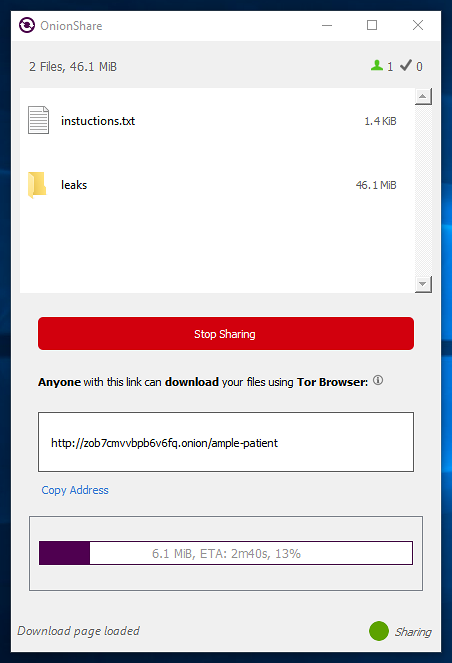

Tag: onionshare

Do you want to contribute to the next major version of OnionShare?
OnionShare lets you securely and anonymously send and receive files. It works by starting a web server, making it accessible as a Tor onion service, and generating an unguessable web address so others can download files from you, or upload files to you. It does not require setting up a separate server or using a third party file-sharing service.
Over the last 10 months volunteer developers, designers, translators, and I have been hard at work on OnionShare 2.0, and it’s nearly ready. If you’d like to chip in during the month or so before the final release, try out the latest development version and report any bugs. The best way to report bugs is by opening an issue on GitHub and describing the problem, or you can send me an email at micah@micahflee.com if you don’t have a GitHub account.

OnionShare has some exciting new features
It’s been some time since I’ve written about OnionShare, so I thought I’d write an update on all of the latest work. Today we released version 1.3 (and last month we released 1.2, so the releases are getting more frequent). You can get the latest version at onionshare.org.
But first, I owe a huge thanks to Miguel Jacq for churning out new features, taking over a lot of the GitHub issue triaging responsibilities, and becoming a core OnionShare developer.
If you haven’t tried it out in awhile, here are some things that are new:
Security Advisory: Upgrade to OnionShare 0.4 Immediately
Yesterday Jacob Appelbaum discovered an input sanitation bug in OnionShare 0.3. It is now fixed, and you should upgrade to the latest version before using it again. You can download the latest version from https://onionshare.org/.